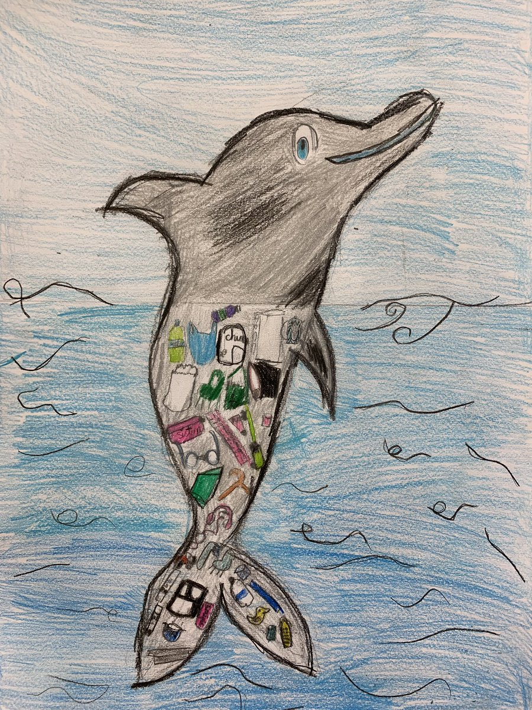
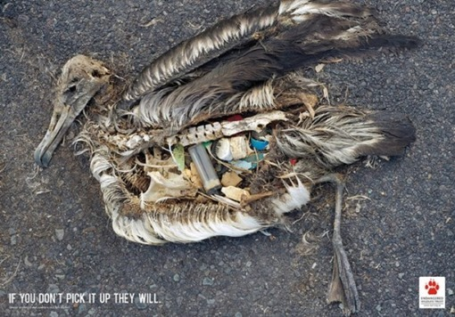
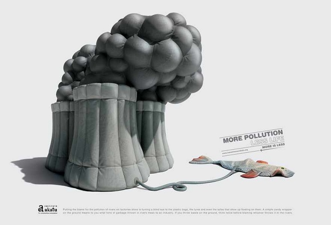

Animals also help in the Environment! We must take care of them!!
All types of animals also deserve to be in a clean environment! Most humans do not realize that the earth must be taken care of since it is the space where life develops and that humans only damage by contaminating and not only the earth, but also the animals that inhabit everything the world, animals play an important role in the environment that is important and that are closely related and is about Caring and Protecting.
For the ecosystem to work, sometimes we need animals that help us make sure that our nature and environment work smoothly. Some of the animals such as bees, dogs, rats, sea lions are the ones that help us reduce the impacts negatives in the world and help to address problems such as global warming, pollution, environmental disturbances, etc.
If we talk about the hunt that humans do towards some animals, this causes great damage since many species are in danger of extinction and every day the number increases. These are some endangered species: whales, albatrosses, elephants, polar bears, penguins, sea turtles and corals. All these species have a fundamental role in maintaining our ecosystem.
Some of us humans have been part of environmental protection and retribution, but for animals, every day is Earth Day. Each animal has its role in this world, these animals always give the world a little love just for being themselves and they are also animals that help us survive:
Animals need to live in a clean environment to survive. Trash and leftovers that are thrown into the water can cause increased algae growth in the water, and thus reducing oxygen to aquatic species. They can also get sick or die by swallowing trash such as plastic bags and plastic bottles. Marine animals can suffocate and birds can become entangled in a plastic rope. Also, by swallowing cigarettes and silicone packs, pieces of metal and broken glass can cut the meat of birds and other animals that are there.  
Harmful chemicals such as bleach, acid or oil can contaminate the air when burned. If they contain toxic chemicals such as dioxin, they can reach the air that people and animals breathe and cause a risk to public health. 